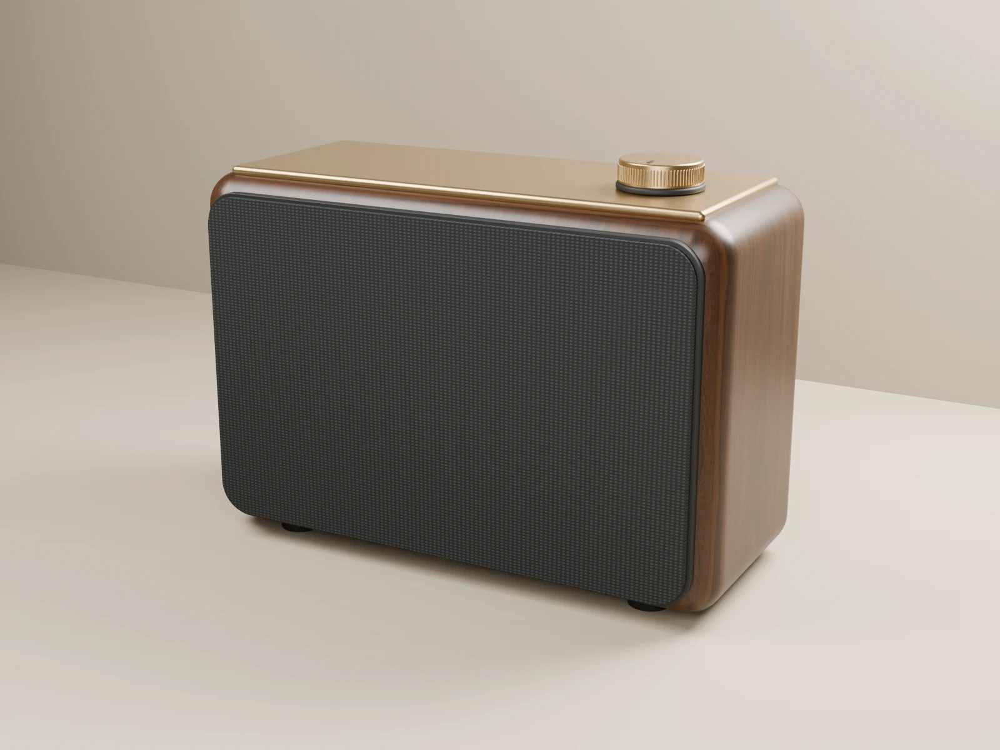
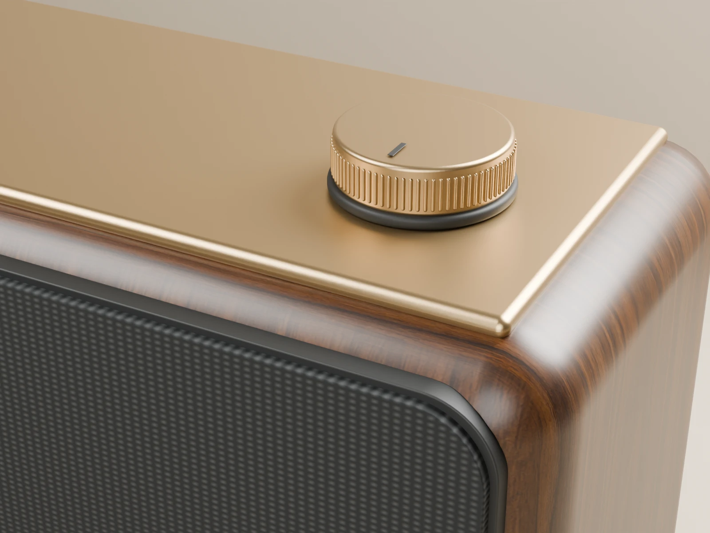
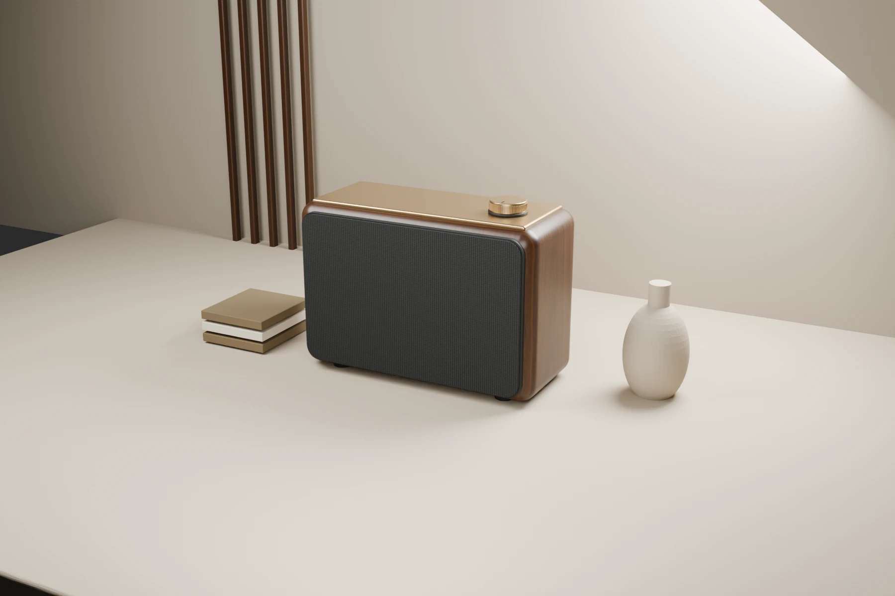
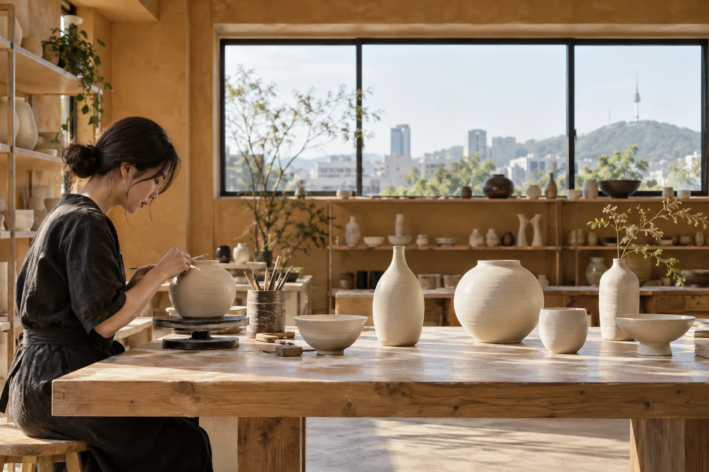
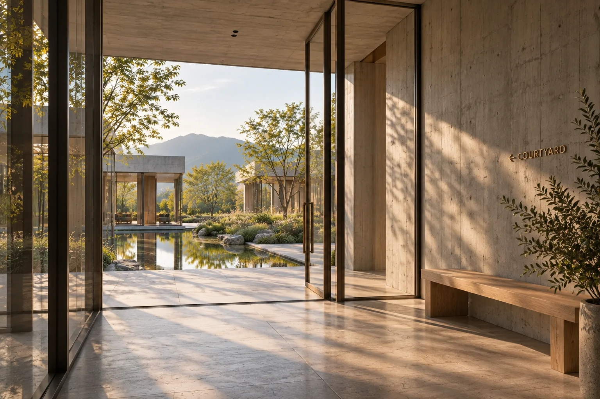
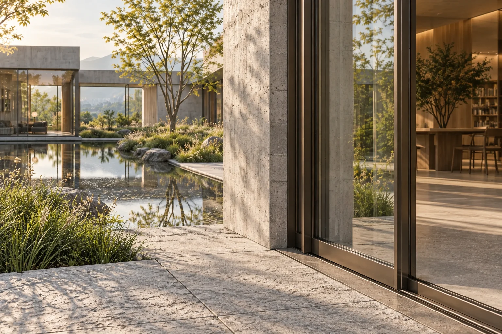
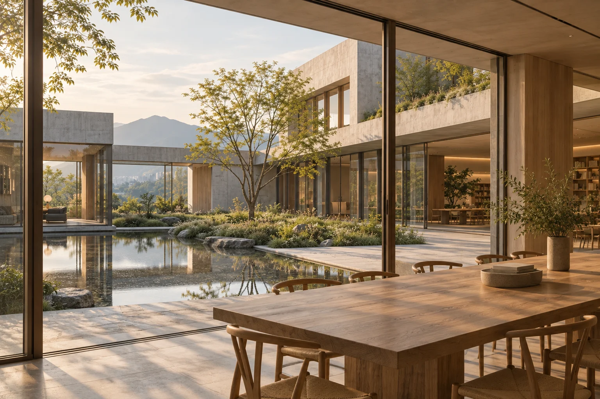

고객 경험 지도
질문과 화면, 운영의 연결
| 접점 | 고객의 질문 | 남길 자료 |
|---|---|---|
| 발견 | 처음도 가능한가요? | 수준별 과정 소개 |
| 비교 | 무엇이 다른가요? | 과정 비교·완성 예시 |
| 신청 | 무엇을 준비하나요? | 일정·준비물 안내 |
| 참여 | 어디로 가나요? | 위치·도착 안내 |
| 이후 | 언제 받나요? | 작품 수령 메시지 |
2026-09-29 / 디자인 방향 검토 · 상품 승인 아님
동일 원본의 월넛·메탈·직물
정지 장면과 60프레임을 같은 물건으로.



기획에서 화면, 운영의 기준까지.
고객이 이해하고 선택하는 경험을 만듭니다.
처음이어도 괜찮아요.
도자기와 함께 천천히 시작해요.

가상 고객사 ONDO의 서비스 탐색 화면 · 실제 예약 서비스가 아닌 디자인 시연입니다.
같은 정보를 세 번 나열하지 않습니다.
고객이 지금 판단할 내용만 그 순간에 보여 줍니다.
배우고 싶은 것부터 골라 보세요.
처음 흙을 만나는 분
꾸준히 배우고 싶은 분
소성과 수령 일정은 각 과정 안내에서 확인합니다.
토요일 14:00 / 약 2시간
방문 전 이동 방법과 일정 변경 기준을 한 번 더 확인하세요.
가상 서비스의 화면·콘텐츠 흐름 시안입니다. 버튼으로도 각 단계를 살펴볼 수 있습니다.
고객이 찾아야 할 정보부터, 한 문장에 하나씩.
회의에서 합의한 내용을 다음 사람이 찾아 쓸 수 있게 정리합니다. 실제 문장과 예시, 담당과 확인 시점이 함께 남습니다.
보고서 한 묶음으로 끝내지 않습니다.
팀이 실제로 쓰는 단위로 정리합니다.
질문과 화면, 운영의 연결
| 접점 | 고객의 질문 | 남길 자료 |
|---|---|---|
| 발견 | 처음도 가능한가요? | 수준별 과정 소개 |
| 비교 | 무엇이 다른가요? | 과정 비교·완성 예시 |
| 신청 | 무엇을 준비하나요? | 일정·준비물 안내 |
| 참여 | 어디로 가나요? | 위치·도착 안내 |
| 이후 | 언제 받나요? | 작품 수령 메시지 |
화면 크기가 달라도 같은 정보
공개 전에 같은 기준으로 확인
입구, 정원, 라운지.
사진 속 장소를 평면에서 함께 찾아봅니다.
공간 관계를 보여 주는 가상 개념평면 · 시공용 도면이 아닙니다.

문을 열면 정원이 먼저 보입니다. 벤치와 안내 사인이 짧은 기다림과 다음 이동을 함께 돕습니다.

회랑의 그늘과 수공간의 반사가 이동의 속도를 바꿉니다. 일하는 곳과 쉬는 곳 사이에 짧은 전환을 둡니다.

긴 테이블과 정원을 향한 시선이 자연스러운 만남을 만듭니다. 조용한 작업과 가벼운 대화가 공존합니다.
깊은 처마는 그늘을 만들고, 큰 창은 정원으로 시선을 엽니다. 사진에서 느낀 편안함을 공간의 관계로 풀어냅니다.
가상 공간의 채광·시선 관계를 설명하는 개념 단면입니다.
공간의 관계, 선택한 재료, 안내의 위치.
다음 파트너가 이어받을 도서의 실제 구성입니다.
| 위치 | 선택 재료 | 검토 기준 |
|---|---|---|
| 회랑 | 노출 콘크리트 | 표면감·빛의 방향 |
| 실내 | 월넛·직물 | 접촉감·유지관리 |
| 경계 | 유리·금속 | 시선·반사·연결 |
결정 지점에서 다음 장소를 알 수 있도록.
입구와 회랑의 분기점에 안내를 둡니다.